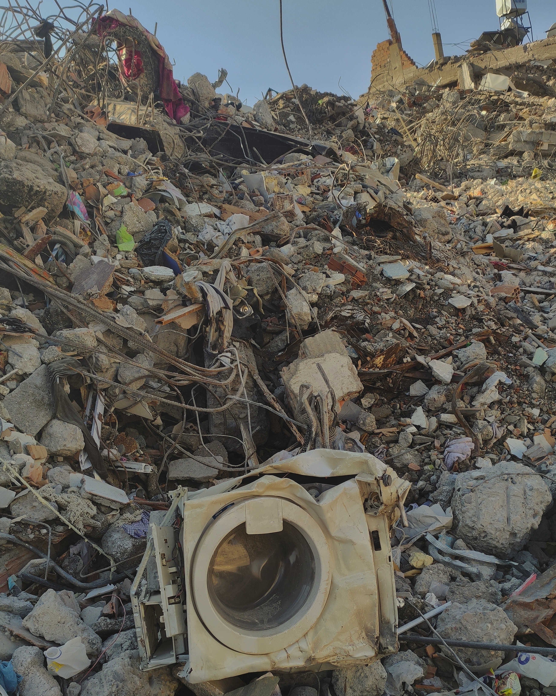
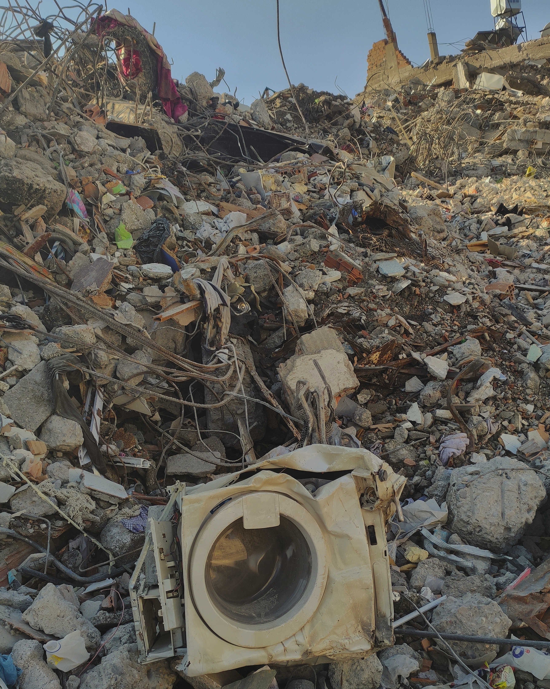

The Importance of Ham Radio
Amateur radio operators can significantly benefit humanity during earthquakes and other unusual circumstances. The two major earthquakes that struck Turkey in quick succession on February 6, 2023, killing tens of thousands of people, provide the most recent illustration of this. After the earthquake, there was a communication breakdown that hindered aid and search and rescue operations for about a week. Amateur radio operators who banded together during this time provided government institutions incredible support. By using their own two feet, bicycles, motorcycles, and cars, some individuals made significant contributions to the crisis management effort.
"When Everything Else Fails. Amateur Radio often times is our last line of defense...When you need amateur radio, you really need them." - The Hon. W. Craig Fugate
 

Similar conditions can be seen in Turkey during the 7.2-magnitude earthquake that struck there in 1999. As you can see, no matter how sophisticated the infrastructure of what we call modern communication methods becomes, no matter how sophisticated technology advances, they have the potential to become passive and render people blind or deaf in unusual circumstances. The skills and responsibilities amateur radio operators have developed in traditional communication methods—which may be considered unnecessary and primitive in regular life—come to the aid of people at this point and can be extremely beneficial in moments of need.